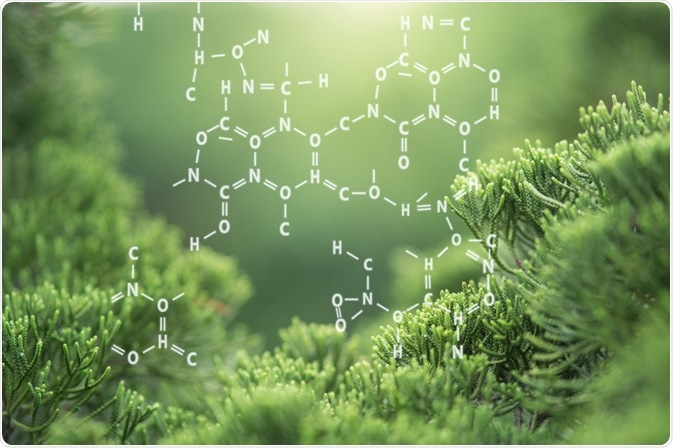
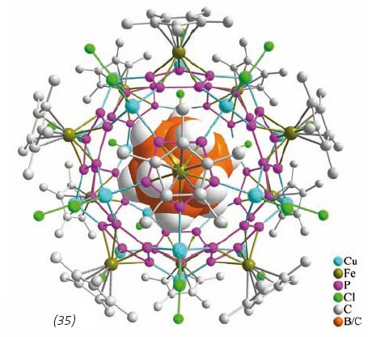
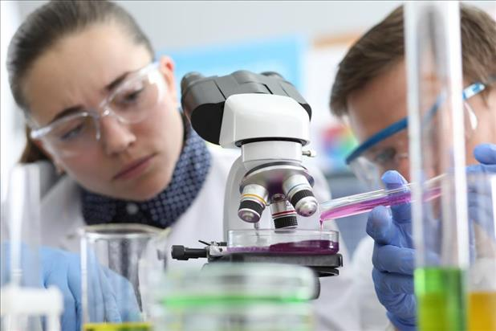

Οργανική χημεία
Δυσκολία = Υψηλή | Κόστος = 450$

Η Οργανική Χημεία έχει ως αντικείμενο μελέτης τις ενώσεις του άνθρακα.
Η σημασία της είναι μεγάλη, αφενός μεν γιατί όλοι οι ζωντανοί
οργανισμοί αποτελούνται απο οργανικά μόρια, αφετέρου δε γιατί η μελέτη της
σχετίζεται άμεσα με τομείς όπως το περιβάλλον, η ιατρική, η βιοχημεία, τα φυσικά
προϊόντα, η ενέργεια, η χημική βιολογία, η ασύμετρη κατάλυση.
Τι θα μάθεις στο συγκεκριμένο μάθημα.
Χρήσιμοι συνδέσμοι!
Ανόργανη χημεία
Δυσκολία = Υψηλή | Κόστος = 250$

Η ανόργανη χημεία ασχολείται με τη σύνθεση και τη συμπεριφορά ανόργανων και οργανομεταλλικών ενώσεων.
Αυτό το πεδίο καλύπτει χημικές ενώσεις που δεν έχουν βάση τον άνθρακα, οι οποίες αποτελούν αντικείμενα της οργανικής χημείας.
Η διάκριση μεταξύ των δύο κλάδων απέχει πολύ από το να είναι απόλυτη, καθώς υπάρχει μεγάλη επικάλυψη στον υποεπιστημονικό
κλάδο της οργανομεταλλικής χημείας. Έχει εφαρμογές σε κάθε πτυχή της χημικής βιομηχανίας, συμπεριλαμβανομένης της κατάλυσης,
της επιστήμης των υλικών, των χρωστικών, των επιφανειοδραστικών, των επικαλύψεων, των φαρμάκων, των καυσίμων και της γεωργίας.
Τι θα μάθεις στο συγκεκριμένο μάθημα.
Χρήσιμοι συνδέσμοι!
Αναλυτική Χημεία
Δυσκολία = Υψηλή | Κόστος = 400$

Η αναλυτική χημεία μελετά και χρησιμοποιεί όργανα και μεθόδους που χρησιμοποιούνται για τον διαχωρισμό,
την αναγνώριση και την ποσοτικοποίηση της ύλης. Στην πράξη, ο διαχωρισμός, η ταυτοποίηση ή η ποσοτικοποίηση
μπορεί να αποτελούν ολόκληρη την ανάλυση ή να συνδυαστούν με άλλη μέθοδο. Ο διαχωρισμός απομονώνει αναλυόμενες ουσίες.
Η ποιοτική ανάλυση προσδιορίζει τις αναλυόμενες ουσίες, ενώ η ποσοτική ανάλυση προσδιορίζει την αριθμητική ποσότητα ή τη συγκέντρωση.
Η αναλυτική χημεία είναι η επιστήμη της απόκτησης, επεξεργασίας και επικοινωνίας πληροφοριών σχετικά με τη σύνθεση και τη δομή της ύλης.
Με άλλα λόγια, είναι η τέχνη και η επιστήμη του προσδιορισμού του τι είναι η ύλη και πόσο υπάρχει.
Τι θα μάθεις στο συγκεκριμένο μάθημα.
Χρήσιμοι συνδέσμοι!